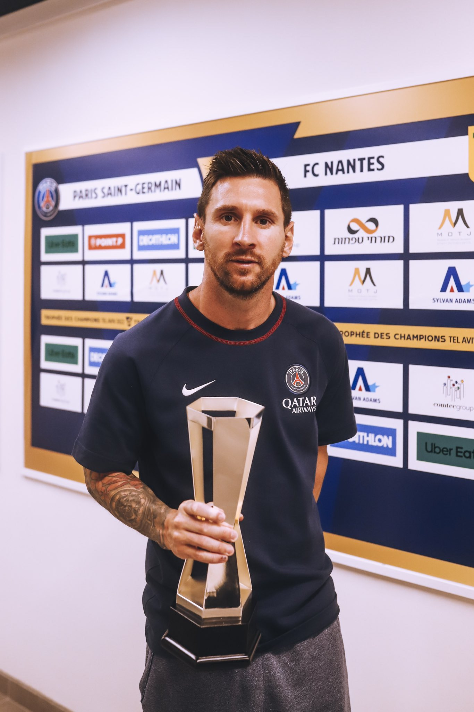
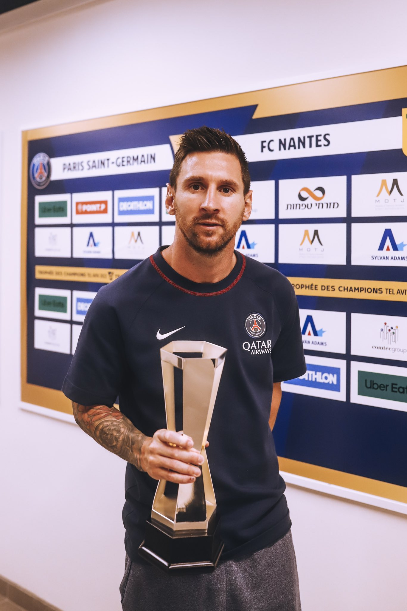

Logros que obtuvo Lionel Messi
Messi ha conquistado un total de 43 títulos oficiales a lo largo de su carrera: 35 con el FC Barcelona, 3 con el PSG, 1 con Inter Miami, 3 con la Selección Argentina, uno con la Selección Argentina sub-20 y otro con la sub-23.
34 titulos en el Barcelona: 10 Ligas de España, 7 Supercopas de España, 7 Copas del Rey, 4 Champions League, 3 Mundiales de Clubes y 3 Supercopas de Europa.

3 titulos en PSG: League One en 2022 y 2023 y Supercopa de Francia en 2022

En Inter Miami cuenta con solo 1 titulo: Leagues Cup en 2023
5 en Argentina: Mundial Sub 20 del 2005, los Juegos Olímpicos 2008 en Pekín, Copa América 2021, Finalissima 2022 y la Copa del Mundo 2022.
Titulos individuales
Messi a lo largo de su carrera ganó un total de 57 títulos individuales.

Messi indivualmente consiguio: 8 balones de oro; 1 FIFA world player; 3 premios the best; 6 botas de oro; 2 premios laureus; 8 pichichi la liga; 9 mvp la liga; 6 maximo goleador Champions; 1 FIFA FIFPro; 2 balon de oro mundial; 2 mejor jugador Europa; 1 golden boy; 2 mvp copa america; 4 onze d'Or; 1 trofeo bravo; 1 mvp leagues cup; 1 goleador leagues cup.


 
